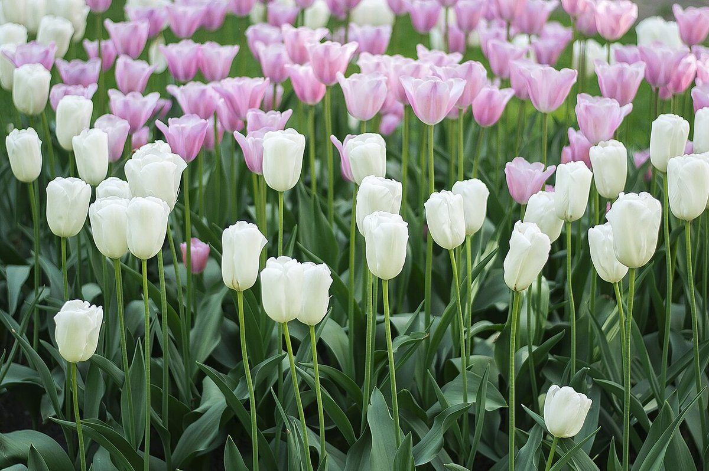
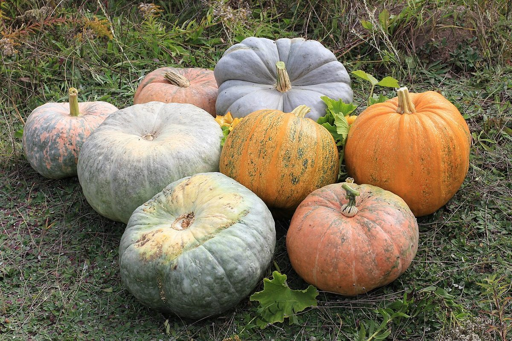

店のこと
店のこと
お店について確認できているのは、所在地・電話番号・Instagramのアカウントです。
このページの「想像してみる」部分は、制作側が想像して書いたものです。お店の実際の様子・考え・メニューとは関係がありません。
確認できていること
- 店名は「パンセゾン」、業種はパン屋
- 所在地は千葉県船橋市二和東５丁目２５−３４(〒274-0805)
- 電話番号は 090-7263-9622(Googleマップ掲載)
- Instagramのアカウントは @pain.saisons4
- 営業時間・定休日・メニュー・価格・ご予約・駐車場は準備中

想像してみる
「セゾン」という響きから
由来は分かりません。制作側は「セゾン」から季節のめぐりを連想し、いつかお店の投稿を見ながら、四季それぞれの姿を想像してみたくなる、と考えました。実際のお店の姿ではありません。

